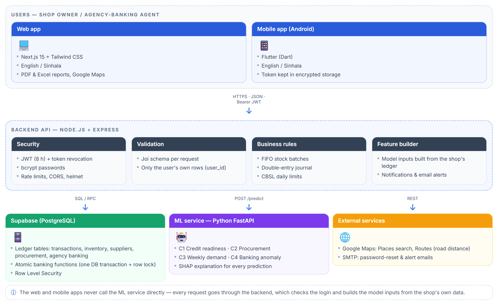
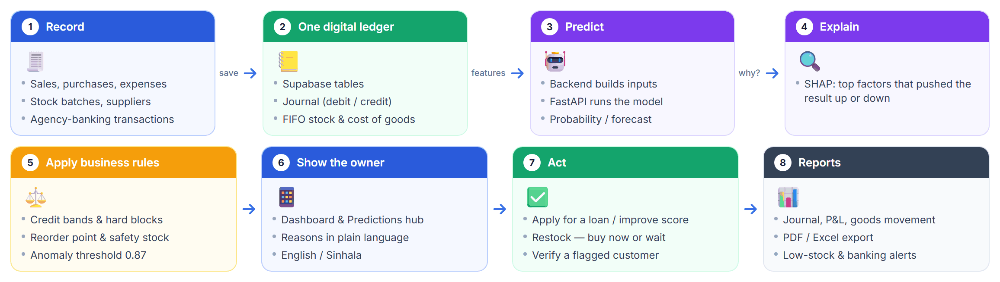
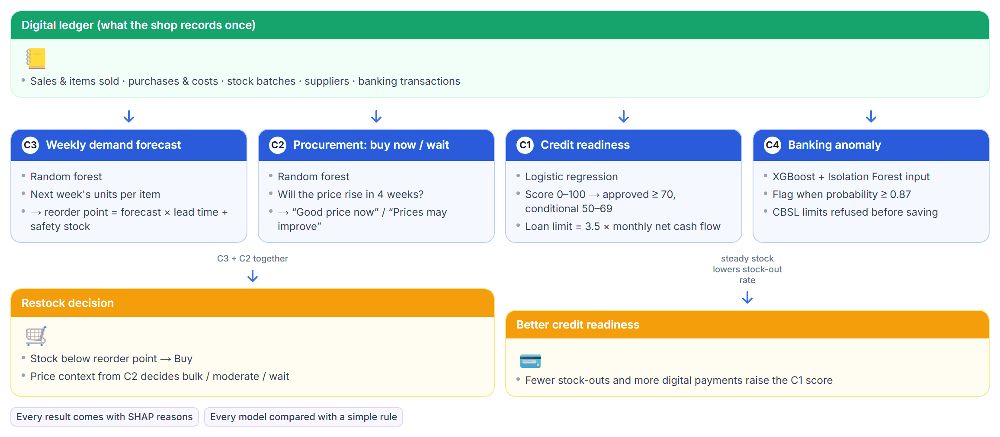
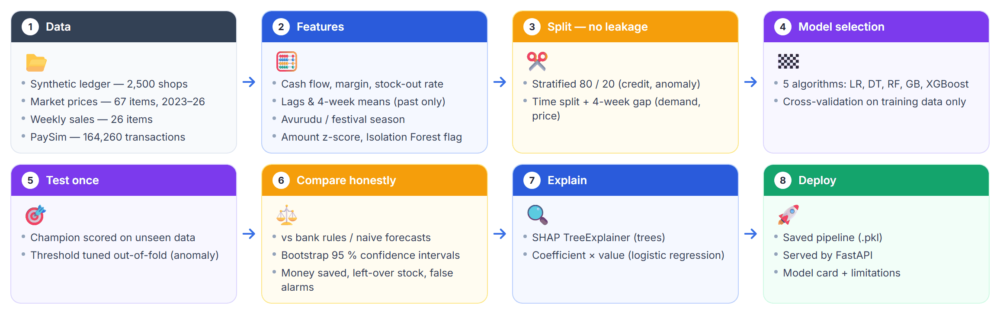
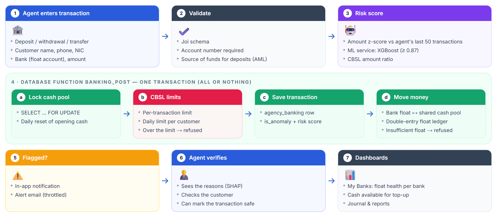
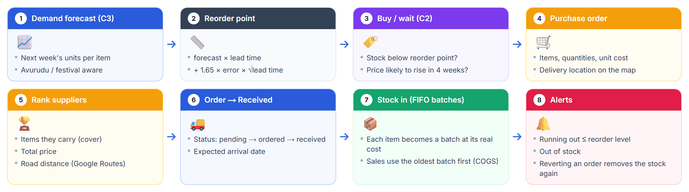

Domain Overview
Lanka-Link sits where micro-enterprise finance, retail operations and agency banking meet. The research asks whether explainable machine learning, built on a shop’s own digital records, can give rural micro-merchants decision support they can trust — and measures that honestly.
Literature Survey
Earlier work shows that alternative data — transaction histories, cash flow and digital-payment activity — can predict the credit-worthiness of “thin-file” small businesses that have no formal credit history. Retail studies apply machine learning to sales forecasting and inventory control, and commodity-price forecasting is widely used to time purchases. In digital finance, fraud and anomaly detection is commonly studied on simulated mobile-money data such as PaySim.
Explainable AI methods such as SHAP make individual predictions understandable, which is essential when the users are not data experts. Most existing solutions, however, treat each of these problems separately, target banks or large retailers rather than the shop owner, and are often evaluated with random splits that overstate results on time-ordered data. The full list of references is in the research proposal.
Research Gap
There is no single tool for rural Sri Lankan micro-merchants that connects day-to-day record keeping with credit, stock, procurement and agency-banking decisions. Existing models are mostly black boxes, ignore local factors such as the Avurudu festival season and CBSL agency-banking limits, and are rarely compared against the simple rules a shop owner or bank already uses — so it is unclear whether the machine learning adds real value.
Research Problem
How can a single digital ledger, with explainable machine-learning models built on it, help rural micro-merchants become credit-ready, keep the right stock, buy at the right time and run agency banking safely — and how much better is it than the simple rules they would otherwise follow?
Research Objectives
- Build a credit-readiness model that scores a shop from its own ledger and sets an explainable loan limit, and compare it with standard bank rules.
- Forecast weekly demand per item — including Avurudu and festival effects — and use it to set reorder points and safety stock.
- Advise whether to buy now or wait using market-price trends, and measure the money it saves on real price data.
- Detect unusual agency-banking transactions while enforcing CBSL daily limits, keeping false alarms low.
- Explain every prediction with SHAP, and deliver all four models in one web and mobile platform (English and Sinhala) through a secure backend.
Methodology
Data: a synthetic digital ledger of 2,500 shops (credit readiness), public market prices of 67 items from 2023 to 2026 (procurement), a weekly sales series of 26 items from 2022 to 2026 (demand) and 164,260 PaySim transactions adapted to agency banking (anomaly detection).
For each component five algorithms were compared — logistic regression, decision tree, random forest, gradient boosting and XGBoost. The model is chosen by cross-validation on the training data only (time-based expanding-window validation for the time-series models) and tested once on unseen data; time-series models are tested on future weeks with a gap so no future information leaks in.
Every model is compared with simple rules or naive forecasts, with bootstrap 95 % confidence intervals, and turned into practical terms (money saved, left-over stock, false alarms per 1,000 customers). SHAP explains each prediction. The models run in a Python FastAPI service behind a Node.js backend that checks the login and builds the inputs from the shop’s own data, used by a Next.js web app and a Flutter mobile app.
System Diagrams
Click a diagram to open it full size.





